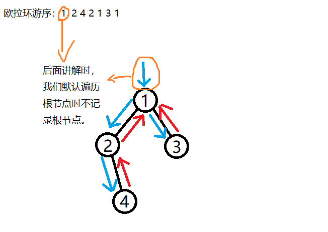

FHQ-正反弧ETT学习笔记
前言
之前在学 2018 国家集训队的某篇论文时，举步为艰，怪自己太高傲自大，选了个比较难的论文，哎。
当然，除了自大，还有一个原因，里面的不少题目和算法都找不到，哎，所以那个时候和同学一起学论文，我的收获是最小的QAQ，可能也是现在我菜的原因之一吧。
但是呢！！！
在洛谷日报，我发现了之前没发现的东西， ETT ！！！
但是后来发现原来还是伪 ETT ，不禁十分失落，但是又又又突然发现评论区竟然有位神仙有写这方面的博客，叫 jerry3128，写了篇ETT的博客，而且不是伪的。后来又发现其还有好几篇高端的数据结构博客（这位神犇是啃发明者论文自己钻研写出来的），深深的折服了我，让我对他愈加敬佩，这就是数据结构带师吗，NB。（虽然我没想明白头像能代表什么 XP ）
回归正题，目前没学会 LCT-ETT ，只学了 FHQ - 正反弧 ETT ，为什么呢，因为不考，所以只是当成一种休闲娱乐吧。（毕竟学算法确实比做题学文化课轻松多了）
前置知识
一个能够维护区间的数据结构。（我才用简单易懂FHQ）
有一定动态树基础最好。
欧拉环游序：普通 DFS 序只在访问时记录，但是欧拉环游序在访问到节点以及访问完一个儿子回溯时都会记录，即一棵树的一条边记左右端点，同时根节点开始记一次。（当然，在后文请忽略根节点开始记一次这一句话，相当于欧拉环游序只剩下了 $2(n-1)$ 个点）

例题
给 $n$ 个点，需要你支持连边，删边，查询两点是否联通，保证连边后图仍然为森林。
算法粗略讲解
ETT是什么，据说只要是用数据结构维护欧拉环游序，就可以叫做ETT，全称 Euler - Tour - Tree。
正反弧
拿上面那张图距离，欧拉环游序为 2 4 2 1 4 1 。
我们需要储存一个点在环游序中的下标，但是一个点可能会出现多次怎么办？观察到一条边会将其两个端点全部记录一遍，因此我们可以开个 $map$ 数组，$map[x][y]$ 表示对于 $x-y$ 这条边，当从 $x$ 遍历到 $y$ 时，$y$ 记录在数组中的下标，比如 $map[1][2]=1,map[4][2]=3$ 。
不过准确来说不能叫下标，为什么，因为这只是针对欧拉环游序不会变的情况，这可是动态树，随时都会变，难道改一次全部改坐标？我们给环游序每个位置给予一个新编号，存的不是下标，而是这个编号。
看不懂往下看就完了。
FHQ维护环游序
我们用FHQ维护欧拉环游序，FHQ最大的好处就是处理区间异常方便。
回收上面的话，我们在维护欧拉环游序时每个位置会在FHQ中有个作为结点的编号，进行区间操作，即使欧拉环游序位置变了，但是在FHQ中对应的节点编号不会改变，而 $map$ 存的就是这个编号。
回归正题，如何维护呢？
换根
参考文献
与jerry3128的私信